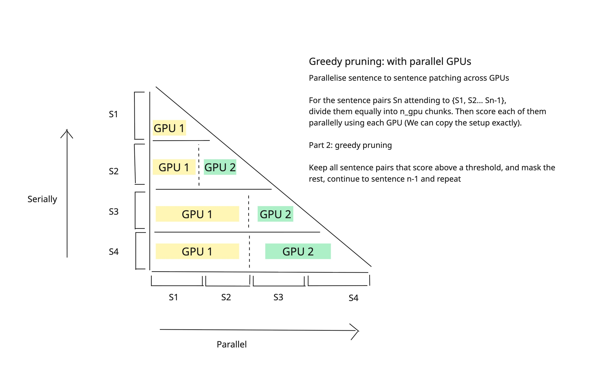
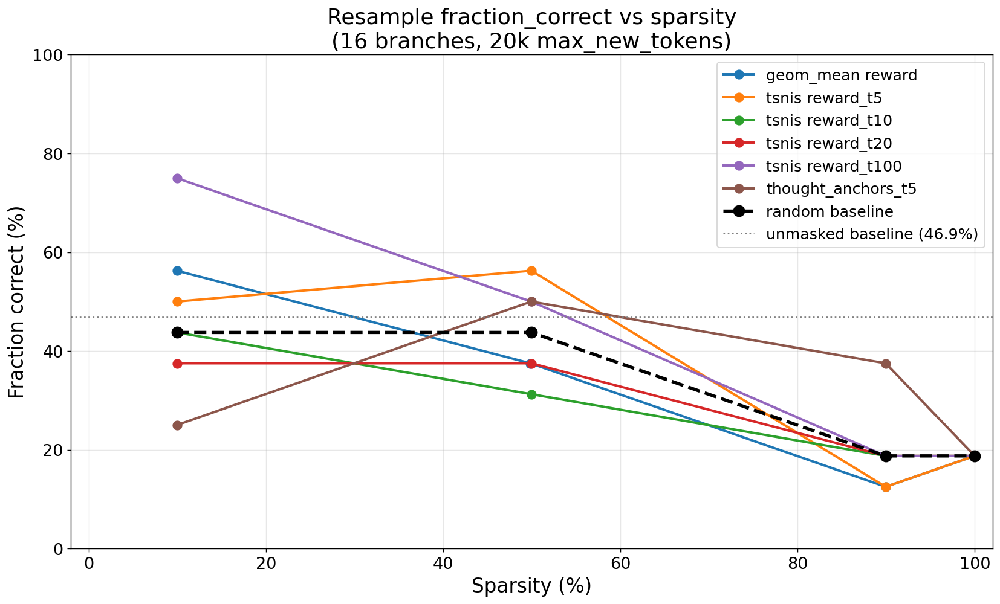
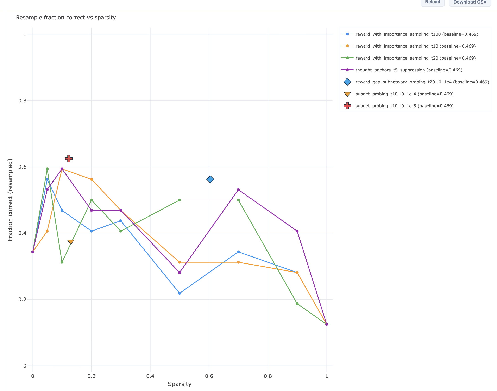
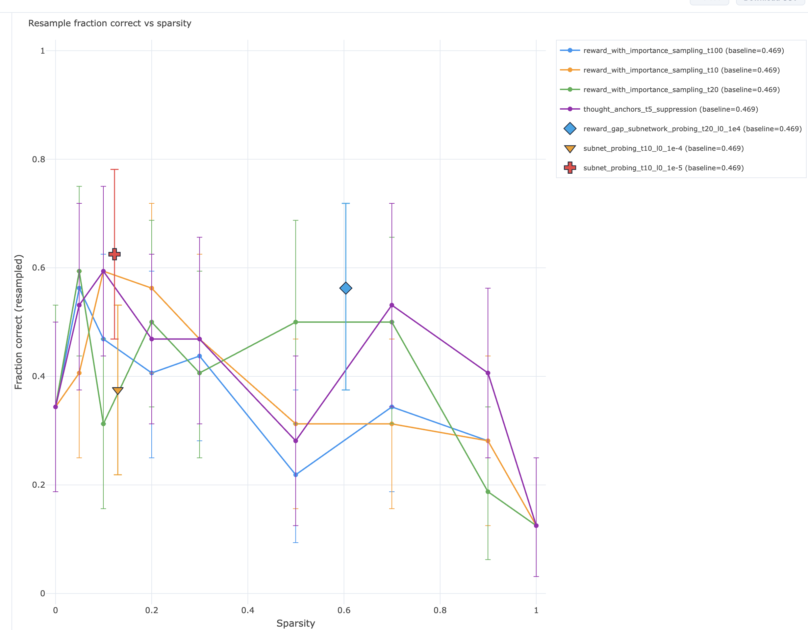
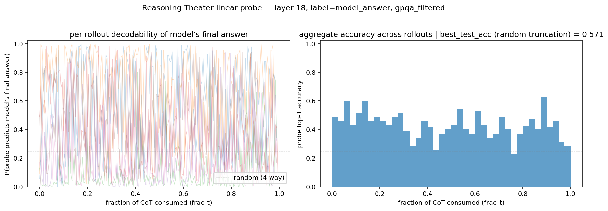
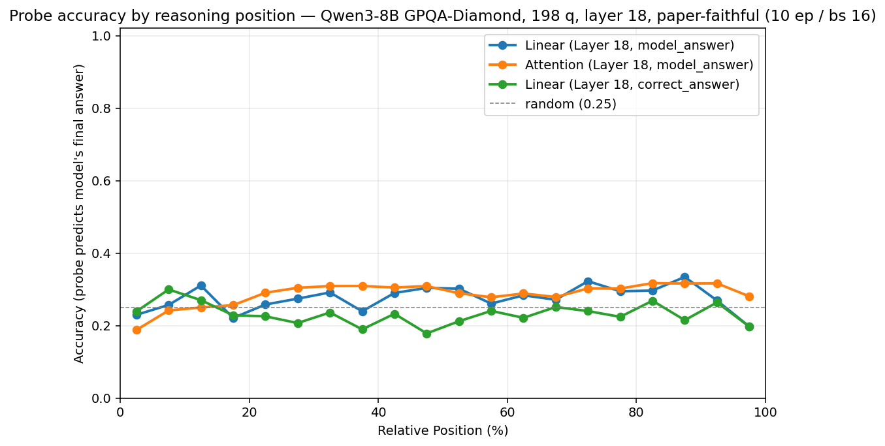
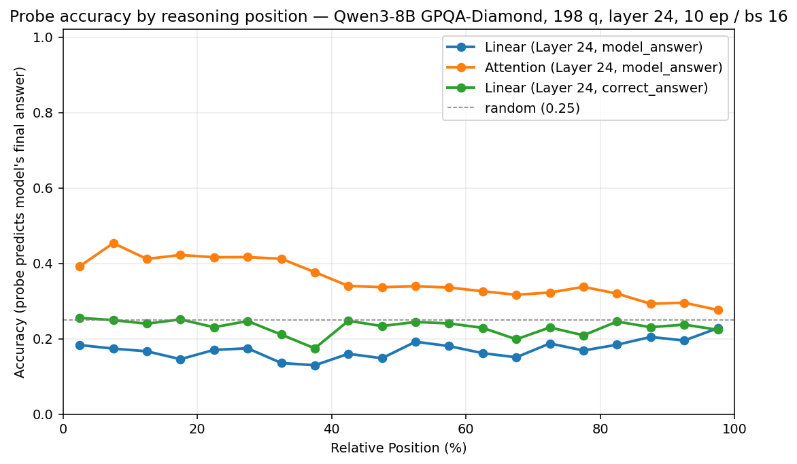
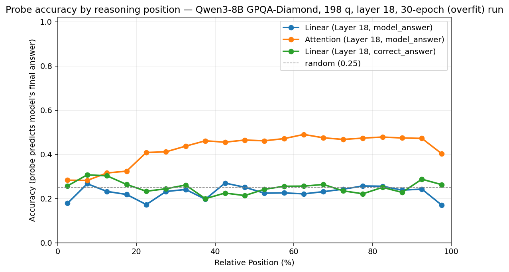

Masks that learn, signal that vanishes.
Hard-Concrete subnetwork probing on sentence-level attention edges, why last week's 10%-sparsity bump dissolved under more samples, and three forced-answer probes for when chain resampling runs out of signal.
Hard-Concrete subnetwork probing on attention edges, with the derivations folded out of the way.
The masking branch is now end-to-end: a learnable scalar per
$(\text{layer},\text{head},\text{src},\text{tgt})$ edge,
trained with a Hard-Concrete relaxation, $L_0$ penalty on the
expected mask occupancy, and the same global reward_gap
objective the IS sweep uses. It rides on top of the existing SDPA
log-additive bias, so a sampled mask of exactly $0$ becomes a
$\log\!\approx\!-18$ pre-softmax bias and SDPA never has to
materialise the attention-weight matrix.
Most of the week was logistics, not algorithm. Cluster nodes were
unavailable, so the runs moved to runpod with a leased
cluster — the trade was that for now we have just the one prompt,
not the multi-prompt sweep. Saving FP32 logits of shape
$(B, T, V)$ for SNIS reweighting blew memory at $T \approx 32\text{k}$;
a Liger fused log-prob kernel that should have produced
$(B, T)$ log-probs without materialising logits returned
NaN losses in our setup. The fallback is a
torch.compile-fused chunked log-prob path
(chain_log_prob_chunked), still tight on memory but
survivable.
§ 1 · One-line loss
The learnable parameter is one real scalar $\log\alpha_e \in \mathbb{R}$ per edge — not a probability, not a bounded value. The mask itself $m_e \in [0,1]$ is derived from $\log\alpha_e$ each forward pass.
nodewise_subnetwork_probing_sdpa$$ \boxed{\; \mathcal{L}(\log\alpha) \;=\; \mathcal{L}_{\text{task}}\!\bigl(m(\log\alpha)\bigr) \;+\; \lambda(t)\,\overline{\Pr[m > 0]} \;} $$
- Task term. $\mathcal{L}_{\text{task}}$ is
any of the existing objectives — local KL, global
answer_kl, or globalreward_gapwith tempered SNIS. - Sparsity term. The expected $L_0$ as a shifted sigmoid, averaged over edges (mean, not sum).
- Schedule. $\lambda(t)$ is not constant — it follows a warmup-then-ramp schedule.
- Optimisation. Adam on $\log\alpha$, frozen model weights, one Hard-Concrete sample per step shared across all branches.
§ 2 · The Hard-Concrete mask
Each forward pass draws one logistic-noise sample $u_e$, pushes $\log\alpha_e + \mathrm{logit}(u_e)$ through a temperature-$\beta$ sigmoid, then stretches the $(0,1)$ output past $[0,1]$ and clamps. The stretch-and-clamp is what gives the mask non-zero probability of being exactly $0$ or exactly $1$:
$$ s_e \;=\; \sigma\!\left(\frac{\mathrm{logit}(u_e) + \log\alpha_e}{\beta}\right),\quad u_e \sim \mathcal{U}(\epsilon,\,1{-}\epsilon) $$
$$ \bar s_e \;=\; s_e\,(\zeta - \gamma) + \gamma,\qquad m_e \;=\; \mathrm{clip}_{[0,1]}(\bar s_e) $$
Constants are fixed at $\beta = 2/3$, $\gamma = -0.1$, $\zeta = 1.1$ — see what each one does. The mask installs as a pre-softmax bias $\log m_e$ on the SDPA backend (clamped at $10^{-8}$ before $\log$), so a sampled $0$ becomes $\log\!\approx\!-18$ and SDPA never materialises the attention-weight matrix.
What $\beta$, $\gamma$, $\zeta$ each control
- $\beta$ — sigmoid temperature. Divides the inner logit before $\sigma$. $\beta = 1$ is the plain logistic; $\beta < 1$ sharpens the sigmoid so a small change in $\log\alpha_e$ flips $s_e$ between near-$0$ and near-$1$ more decisively. At $\beta = 2/3$ a $\log\alpha_e$ shift of about $1$ already moves $s_e$ across most of $(0,1)$, so the post-clamp mass concentrates on the hard ends. $\beta \to 0$ is the discrete limit; $\beta = 1$ would leave a smooth, fully soft sigmoid. The paper holds $\beta$ fixed (no annealing); we follow that.
- $\gamma < 0$ — lower stretch. Shifts the sigmoid output below $0$ before clamping, so any $s_e \le -\gamma/(\zeta-\gamma) \approx 0.083$ collapses to an exact $m_e = 0$. Without $\gamma < 0$ the mask would never be exactly off, only asymptotically small — gradients would keep nudging "near-zero" edges, and the mask would never reach a hard 0/1.
- $\zeta > 1$ — upper stretch. Symmetric to $\gamma$: $\zeta = 1.1$ means any $s_e$ above $(1-\gamma)/(\zeta-\gamma) \approx 0.917$ saturates to an exact $m_e = 1$. Edges that "want to stay" get pinned at full attention with zero gradient pressure.
Together: $(\gamma, \zeta)$ creates the hard $0$ / hard $1$ tails; $\beta$ controls how aggressively the sigmoid pushes $s_e$ into those tails. The fixed combination $(2/3, -0.1, 1.1)$ from Louizos, Welling & Kingma, 2018 has been tuned so that under the prior $\log\alpha = 0$ the expected mask is roughly $\widehat m \approx 0.5$ with non-trivial mass at both $0$ and $1$.
§ 3 · Sparsity penalty as a shifted sigmoid
With $(\beta, \gamma, \zeta)$ fixed, the per-edge active probability collapses to a sigmoid of $\log\alpha_e$ shifted by a single constant:
$$ \boxed{\; \Pr[m_e > 0] \;=\; \sigma\!\bigl(\log\alpha_e - C\bigr), \quad C \;=\; \beta\,\log(-\gamma/\zeta) \;} $$
- $\log\alpha_e \approx -1.60 \Rightarrow$ edge is on with probability $\approx 0.5$ — the "kill threshold".
- $\log\alpha_e \gg -1.60 \Rightarrow$ near-always on; the sparsity term costs $\approx 1$ per edge, so all-on is expensive.
- $\log\alpha_e \ll -1.60 \Rightarrow$ near-always off; the sparsity term costs $\approx 0$, and the noise-free read-out $\widehat m_e$ has hit the lower clamp.
- Closed-form, differentiable in $\log\alpha_e$, no Monte-Carlo of the mask sample needed.
- Loss uses the mean over edges, not the sum (Cao et al.) — keeps $\lambda$ comparable across granularities.
Why the closed form is a shifted sigmoid
The mask $m_e$ is exactly $0$ iff the stretched sigmoid $\bar s_e \le 0$, i.e. iff $s_e \le -\gamma/(\zeta-\gamma)$. Using $\sigma^{-1}(t) = \log\bigl(t/(1-t)\bigr)$ at $t = -\gamma/(\zeta-\gamma)$ gives $\sigma^{-1}(t) = \log(-\gamma/\zeta)$. Because $u_e$ is uniform, $\mathrm{logit}(u_e)$ is logistic-distributed, so
$$ \Pr[s_e > t] \;=\; \Pr\!\bigl[\mathrm{logit}(u_e) > \beta\,\sigma^{-1}(t) - \log\alpha_e\bigr] \;=\; \sigma\!\bigl(\log\alpha_e - \beta\,\sigma^{-1}(t)\bigr). $$Substituting the threshold gives $\Pr[m_e > 0] = \sigma(\log\alpha_e - C)$ with $C = \beta\log(-\gamma/\zeta)$. With our constants $C \approx -1.60$ — exactly the "kill threshold" referenced above.
How the per-entry probabilities are reduced to one scalar for the loss:
pairgranularity: one $(1, S, S)$ tensor is shared across all target layers; mean is taken over that one tensor.layer/headgranularity: each target layer has its own $(1, S, S)$ or $(H, S, S)$ tensor; per-layer means are averaged across layers.
§ 4 · The $\lambda$ schedule, and why it isn't a constant
Hold $\lambda$ constant from step zero and the mask collapses before it has explored anything useful. Following Cao et al. we warm up at $\lambda = 0$, ramp linearly to $\lambda_\text{max}$, and hold.
Warmup → ramp → hold, with defaults
With $f = t / (T-1)$ over training steps:
$$ \lambda(t) \;=\; \begin{cases} 0 & f < f_\text{warmup} \\[3pt] \lambda_\text{max} \cdot \dfrac{f - f_\text{warmup}}{f_\text{ramp}} & f_\text{warmup} \le f < f_\text{warmup} + f_\text{ramp} \\[8pt] \lambda_\text{max} & \text{otherwise.} \end{cases} $$Defaults: $f_\text{warmup} = 0.25$, $f_\text{ramp} = 0.50$ —
so the first quarter of training is pure task loss, the next
half ramps the regulariser, and the final quarter holds it. The
forward $L_0$ pass is skipped entirely during warmup. Setting
l0_lambda_schedule=False reverts to a flat
$\lambda \equiv \lambda_\text{max}$.
§ 5 · Hyperparameters
Subnetwork-probing-specific knobs only — every shared CLI hyperparameter (granularity, mode, sentence gap, IS temperature, layers to analyse, …) is forwarded to the base class unchanged. IG-only kwargs are accepted and ignored, so this method is a drop-in replacement in the factory.
| knob | default | what it controls |
|---|---|---|
num_training_steps |
150 | Adam steps; one HC sample per step shared across branches. |
learning_rate |
0.05 | Adam LR on $\log\alpha$ — Louizos-range. |
l0_lambda |
$10^{-3}$ | $\lambda_\text{max}$ in the closed-form $L_0$ penalty. |
l0_lambda_schedule |
True | Toggles the warmup-and-ramp schedule. |
l0_warmup_frac |
0.25 | Initial fraction at $\lambda = 0$ (schedule). |
l0_ramp_frac |
0.50 | Linear ramp window (schedule). |
log_alpha_init |
2.0 | Deviation from paper. Gives
$\widehat m_e \approx 0.99$ at step 0 — masks start
nearly fully on; reward_gap learns
what to remove rather than what to add. |
hard_concrete_beta |
$2/3$ | Temperature in the HC sample; held fixed (no annealing). |
hard_concrete_gamma |
$-0.1$ | Lower stretch in the HC sample. |
hard_concrete_zeta |
$1.1$ | Upper stretch in the HC sample. |
evaluate_mask turns that continuous score into a
binary mask at any sparsity. So the L0 penalty is a soft
regulariser, not a calibrated sparsity constraint — calibration
happens at evaluation.
§ 6 · Evaluation — what the paper does, and how we deviate
Training saves a NodeMask whose
.scores attribute is the deterministic read-out
$\widehat m_e \in [0,1]$ at the configured granularity. There are
two views of how to use it.
Cao et al.'s recipe — install $\widehat m$ directly
The paper does not threshold the saved scores. It installs $\widehat m_e$ as the mask, with no further conversion:
- Edges with $\log\alpha_e \le \beta\log(-\gamma/\zeta) \approx -1.60$ have $\widehat m_e$ clamp to exact $0$ and are genuinely ablated — the "kill threshold" from §3.
- Surviving edges keep their continuous $\widehat m_e \in (0,1]$ and act as a soft attenuation through the SDPA log-bias.
- Reported sparsity is the fraction of exactly-zero entries, not a quantile. It is a training output, determined by $\lambda_\text{max}$.
To trace a sparsity-vs-accuracy curve, Cao et al. retrain the mask at several $\lambda_\text{max}$ values ($\lambda_\text{max} \in \{1, 5, 10, 25, 125\}$ in their paper) and pick the largest one whose accuracy stays within a tolerance of fine-tuning. One trained mask = one point on the curve.
Our deviation — sweep thresholds over a single trained mask
We use a static $\lambda_\text{max}$ and instead sweep thresholds over the saved scores at evaluation time, so a single trained mask traces an entire sparsity axis. This is the "compensation" called out as deviation #2 in the implementation note: we don't calibrate $\lambda_\text{max}$ per target sparsity, so the threshold sweep does that calibration after the fact.
- Pick a target sparsity $s \in [0,1]$ — the fraction of edges to ablate.
- Compute $\tau_s$ as the $s$-quantile of the flattened scores.
- Zero edges below the threshold; keep the rest as-is.
- Install the result via
install_mask_hooksand run one forward pass per evaluation prompt.
threshold = torch.quantile(scores.flatten(), sparsity) masked = torch.where(scores >= threshold, scores, scores.new_zeros(()))
Standard sweep is $s \in \{0.0,\,0.3,\,0.5,\,0.7,\,0.9\}$ — the same axis as the resample curves in tab 2 and last week's IS sweep. Sparsity $0.0$ is the unmasked baseline; sparsity $0.9$ ablates the lowest-scoring 90% of edges.
Two consequences worth flagging:
- The "natural" sparsity is built into $\widehat m$. A mask trained at our default $\lambda_\text{max} = 10^{-3}$ already has some entries clamped to exact $0$ — that count is the sparsity Cao et al. would report. The threshold sweep simply picks any other $s$ along the same ranking.
- Threshold sweeps blur paper-style sparsity. Sweeping past the natural sparsity zeros out edges that the training procedure thought were worth keeping ($\widehat m_e > 0$). This is fine for cross-method comparison on a fixed sparsity axis but is not the same regime the paper studies — it's the deviation, not a faithful re-implementation.
§ 7 · The greedy-pruning baseline
The non-learning baseline we compare against: rank edges by an importance score, ablate them in greedy order, and read off evaluation metrics at each ablation step. No mask training, no regulariser — a deterministic ladder.

The 10%-sparsity bump from last week was within the noise floor.
Last week's headline was a 10%-sparsity gap on the resample evaluation: at that one threshold, our masks looked like they recovered correctness better than random ablation. This week's rerun moves $N$ from 16 to 32 branches and adds a 95% bootstrap confidence band. The gap dissolves: the error bars at 10% sparsity are the size of the fluctuations we previously read as signal. Subnetwork probing in particular does not separate from random.



If the signal doesn't reach 10–30k tokens away, ask the model directly instead.
The branching evaluation samples 10–30k tokens after the analysis timestep, then asks how often the answer comes out right. Tab 2 is one way to read the result: at 32 samples the signal is buried in noise. The other reading is more structural — the signal may simply not propagate that far. For multiple-choice prompts there is a cheaper read of the same question: force the answer at the analysis position and look at the model's logits directly. Two probes, both deterministic, both one forward pass per (prefix, mask).
§ 1 · Forced answer at token T
After the prefix (with optional $k$ extra reasoning sentences from the base path), append a fixed closing-of-thought suffix and read the four answer-letter logits from the very next position. Renormalising over $\{A,B,C,D\}$ gives the model's forced-answer distribution; comparing that to the unmasked distribution gives a per-mask probe-KL.
suffix = " </think> I think the answer is "
$z_M$ are the masked model's logits at the suffix's last position; $t_a$ is the token id of letter $a$. No chain sampling, no $\boxed{\dots}$ parsing, no SNIS — therefore no SNIS-collapse pathologies.
The flag --sentences_after_prefix k inserts $k$
reasoning sentences from the base path between the prefix and the
suffix, so the probe can range from "force the answer right now"
($k = 0$) to "force the answer after a few more reasoning
sentences" ($k > 0$). Those extra sentences participate in mask
learning, which is the lever that lets the optimiser meaningfully
shift the answer distribution.
Three local objectives are wired up against this probe — KL to
the clean distribution, a margin between the target letter and
the runner-up, and a logit-margin variant operating directly on
$z_M$ rather than on the renormalised softmax. Discovery modes
cover both gradient-descent SNP and the existing
column-zeroing baselines (thought_anchors,
suppress-on-answer) measured at the new probe
position.
sentences_after_prefix introduces. The next meeting
will fold in the sweep across $(\lambda, \text{lr}, k)$ on
GPQA-32 / s50.
§ 2 · Probe at T — cosine similarity to a learned answer probe
Train a linear probe on the model's residual stream to predict the final answer letter, then read out cosine similarity between the probe direction and the residual at the analysis position. Same shape of question as forced-answer (one deterministic read per prefix), different mechanism — the probe is a learned summary of what the model "knows" rather than a forced decoding of what it would say.
Qwen 3 8B is a difficult target for this: the answer is not
linearly decodable from the residual at most layers and most
positions in the analysis window, so the probe's reliability is
thin. The plan is to rerun on
gpt-oss-120b — its analysis window doesn't have the
same 10–30k-token branching tail, so the signal-to-decode gap
should be smaller and the probe useful.



